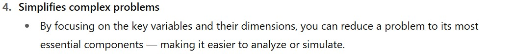
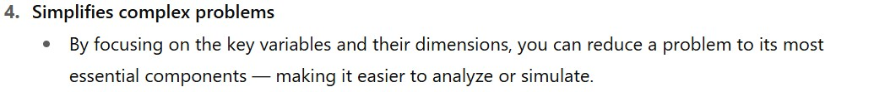

Fluid Mechanics
Dimensional analysis
Lecturer: Jakob Hærvig
Slides by Jakob Hærvig (AAU Energy) and Jacob Andersen (AAU Build)
Why look at dimensional analysis?


 



Dimensionless numbers are important for dimensional analysis
How do people come up with dimensionless numbers?
The basis for all dimensional analysis
Total of seven base dimensions in the MLT system:
- Mass, M
- Length, L
- Time, T
- Temperature, θ
- Amount of substance, N
- Electrical current, I
- Luminous intensity, C
All derived dimensions can be expressed in terms of these base dimensions:
- Velocity, [$V$] = LT$^{-1}$
- Acceleration, [$a$] = LT$^{-2}$
- Force, [$F$] = MLT$^{-2}$
- Energy, [$E$] = ML$^{2}$T$^{-2}$
- ...
.. we may also use the FLT system:
- Force, F
- Length, L
- Time, T
- ...
Simply convert between MLT and FLT by $\text{F}=\text{MLT}^{-2}$.
MLT systems in the wild..
Dimensions in OpenFOAM are defined in terms of the MLT system (here velocity)
Law of Dimensional Homogeneity
Every additive term ($+$ or $-$) in an equation must have same dimensions
Example: Newton's second law of motion
F = m a
[$F$] = [$m$][$a$]
MLT: MLT$^{-2}$ = M LT$^{-2}$
FLT: F = F
yrsdy
Dimensions in OpenFOAM are defined in terms of the MLT system (here velocity)